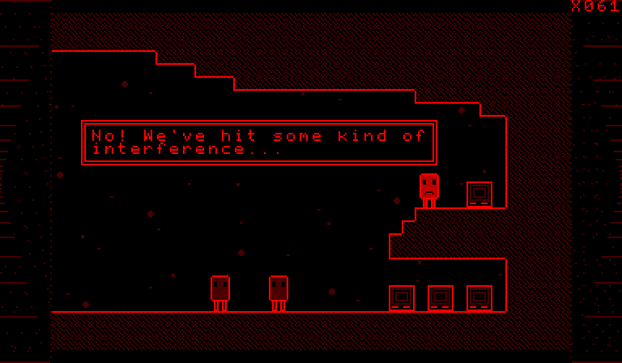

VIRTUAL RED SHIFT closed beta

Free demo · version 0.1
The first level, the open world around the ship, and Space Station 2, up to Vitellary's rescue.
virtual-red-shift-demo.vb (2 MB), for a Virtual Boy flash cartridge or an emulator. md5 1f452e313ee92f02245966a8e644717f.
The Laboratory, the Warp Zone, the Tower and the Final Level are not in the demo.
To join the closed beta, send a private message on Discord to @henzelince.
Based on the VVVVVV source code, © 2010-2020 Terry Cavanagh. This is a modified version, not the original game. Unofficial, non-commercial port, not for sale: if you paid for this, you were scammed.
VVVVVV is a commercial game, with art and music this port does not have. Support its author: thelettervsixtim.es.
If the author of VVVVVV asks for this port to be withdrawn, it will be.